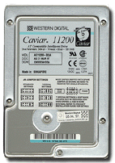
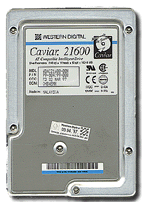
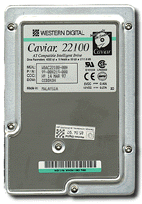
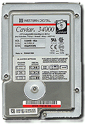

 |
 |
 |
 |
| WD Caviar 1.2GB | WD Caviar 1.6GB | WD Caviar 2.1GB | WD Caviar 4GB |
Uputstvo za instalaciju InstHDD.PDF
Neprenosivi ureðaj unutar kompjutera mnogo veæeg kapaciteta nego što ga ima flopi disketa. Formatirani kapacitet raèuna se na sledeæi naèin:
Heads x Cylinders x Sectors x 512 bajtova
- Heads - Broj glava Hard diska.
- Cylinders - Ukupni broj cilindara.
- Sectors - Broj sektora po treku. MFM imaju 17, RLL 26 a ESDI 34 sektora po treku. SCSI i IDE diskovi mogu imati i veæi broj sektora.
za naš primer to je:
5 x 901 x 51 x 512 = 117 634 560 bajtova ( / 2 20) = 112.18 MB
Maksimalni kapacitet IDE Hard diska je 26 x 24 x 210 bita odnosno 63 x 16 x 1024 x 512 = 528 482 304 bajtova dnosno 528 MB (MB ako uslovno milion bajtova izgovarate kao mega bajt) ili 504 megabajta (MB)
Na sebe može primiti informacije kapaciteta od nekoliko
stotina flopi disketa. Bez njega je rad na PC kompjuterima u ovo
vreme nezamisliv. Ne preporueuje se kapacitet manji od 100MB. U
radu sa kompjuterima, oznaèavanje particija Hard diska poèinje
sa slovom C: i može ih biti do 24 odnosno do oznake Z:.
Najzastupljenija dva tipa su IDE i SCSI.
Prilikom transporta kompjutera potrebno je prethodno parkirati
glave Hard diska. Svi novi modeli Hard diskova imaju tkzv.
autopark funkciju, glave se automatski parkiraju pre gašenja
Hard diska.
IDE (Integrated Drive Electronics)
Najzastupljeniji tip Hard diska. Sa kompjuterom se povezuju preko IDE interfejsa na HDD/FDD adapteru. Kapacitet jednog IDE diska ne može biti veæi od 528MB i mogu se instalirati max. 2 diska na jedan kompjuter (ili 4 ukoliko imate EIDE adapter).
Nova verzija IDE diskova koji uz posebne drajvere prevazilaze problem sa barijerom od 528MB. Prva grana radi na adresi 1F0, 3F6 i IRQ 14, a druga na 170, 376 i IRQ 15. Teorijska brzina je 16MB u sec. Možete prikljuèiti max 4 IDE diska.
Diskovi za profesionalnu upotrebu (takva im je i cena), uglavnom velikog kapaciteta. SCSI dozvoljava kaèenje "u lanac" do 7 Hard diskova. Ako svaki ima npr. 4GB trebaæe Vam dosta vremena da ih popunite. Praktikuje se korišæenje SCSI diskova kapaciteta od 2GB pa na više jer su SCSI adapteri nekoliko puta skuplji od IDE adaptera.
Metod pakovanja podataka u track. To je: MFM, RLL ili ARLL.
{kind=link}